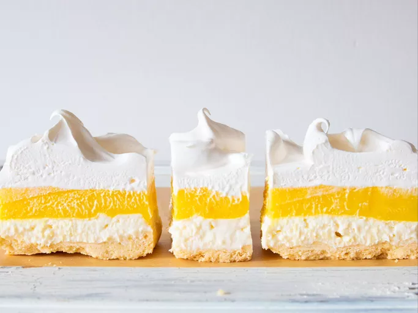

Lemon Lush

Description
This lemon lush dessert has a shortbread crust and layers of lemon and cream cheese filling. A family friend
shared this recipe with me. It's always a hit at any get-togethers.
Ingredients
- 2 cups all-purpose flour
- 1 cup butter, softened
- 2 (8 ounce) packages cream cheese, softened
- 1 cup white sugar
- 3 ½ cups milk
- 2 (3.4 ounce) packages instant lemon pudding mix
- 1 (12 ounce) container frozen whipped topping (such as Cool Whip), thawed
Steps
- Preheat the oven to 350 degrees F (175 degrees C).
- Combine flour and butter in a bowl using a pastry cutter until mixture is crumbly; press into the bottom of
a 9x13-inch baking dish.
- Bake in the preheated oven until lightly golden, about 25 minutes. Cool completely, about 15 minutes.
- Beat cream cheese and sugar together in a separate bowl using an electric mixer until smooth and well
blended; spread evenly over cooled crust.
- Whisk milk and lemon pudding mix together in a separate bowl for 3 to 5 minutes; spread over cream cheese
layer. Chill in the refrigerator until set.
- Top dessert with whipped topping. Store in the refrigerator until serving.
Back to Home